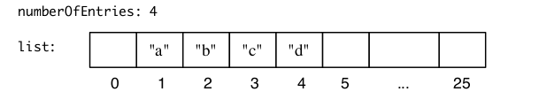

Lab 6 - Chapter 10 List Implementation (Oct 24th)
Table of Contents
Overview
In this lab, you will explore the array-based implementation of the list by a Java class AList. You will implement two methods in AList to support extra functionalities.
Resources
Please download two source code files from Blackboard.
AList.javaListInterface.java
Tasks
Task 1. Analyze AList.java
What would happen to the array after executing the following code?
AList<String> x = new AList<String>(5);
x.add("a");
x.add("b");
x.add("c");
x.add("d");
x.add(2, "x"); // trace how "x" is added to position 2

Figure 1: Initial State of the List
Task 2. Implement Method reverse
A public void method reverse to reverse the order of items in a list.
Task 3. Implement Method cycle
A public void method cycle to cycle the first item to the end of the list.
Task 4. Testing
Write testing cases to verify the correctness of reverse and cycle. You can build your testing cases based on the codes in Task 1.
Submission
Please submit your amended Java source file (AList.java) with a screenshot of the test cases execution result.
Appendix
import java.util.Arrays;
class AList<T> implements ListInterface<T> {
private T[] list; //Array of list entries; ignore list[0]
private int numberOfEntries; // current number of entries in list
private boolean integrityOK;
private static final int DEFAULT_CAPACITY = 25;
private static final int MAX_CAPACITY = 10000;
public AList() {
this(DEFAULT_CAPACITY); // Call next constructor
} // end default constructor
public AList(int initialCapacity) {
integrityOK = false;
// Is initialCapacity too small?
if (initialCapacity < DEFAULT_CAPACITY) {
initialCapacity = DEFAULT_CAPACITY;
} else // Is initialCapacity too big?
{
checkCapacity(initialCapacity);
}
// The cast is safe because the new array contains null entries
@SuppressWarnings("unchecked")
T[] tempList = (T[]) new Object[initialCapacity + 1];
list = tempList;
numberOfEntries = 0;
integrityOK = true;
} // end constructor
/**
* Throws an exception if this object is not initialized.
*
*/
private void checkIntegrity() {
if (!integrityOK) {
throw new SecurityException("ArrayBag object is not initialized "
+ "properly.");
}
} // end checkIntegrity
/**
* Throws an exception if the desired capacity exceeds the maximum.
*
*/
private void checkCapacity(int desiredCapacity) {
if (desiredCapacity > MAX_CAPACITY) {
throw new IllegalStateException("Attempt to create a bag "
+ "whose capacity exceeds "
+ "allowed maximum.");
}
} // end checkCapacity
public void add(T newEntry) {
checkIntegrity();
list[numberOfEntries + 1] = newEntry;
numberOfEntries++;
ensureCapacity();
} // end add
// Precondition: The array list has room for another entry
public void add(int givenPosition, T newEntry) {
checkIntegrity();
if ((givenPosition >= 1) && (givenPosition <= numberOfEntries + 1)) {
if (givenPosition <= numberOfEntries) {
makeRoom(givenPosition);
}
list[givenPosition] = newEntry;
numberOfEntries++;
ensureCapacity(); // Ensure enough room for next add
} else {
throw new IndexOutOfBoundsException(
"Given position of add's new entry is out of bounds.");
}
} // end add
public T remove(int givenPosition) {
checkIntegrity();
if ((givenPosition >= 1) && (givenPosition <= numberOfEntries)) {
// Assertion: The list is not empty
T result = list[givenPosition]; // Get entry to be removed
// Move subsequent entries towards entry to be removed,
// unless it is last in list
if (givenPosition < numberOfEntries) {
removeGap(givenPosition);
}
list[numberOfEntries] = null;
numberOfEntries--;
return result; // Return reference to removed entry
} else {
throw new IndexOutOfBoundsException(
"Illegal position given to remove operation.");
}
} // end remove
public void clear() {
numberOfEntries = 0;
} // end clear
public T replace(int givenPosition, T newEntry) {
checkIntegrity();
if ((givenPosition >= 1) && (givenPosition <= numberOfEntries)) {
assert !isEmpty();
T originalEntry = list[givenPosition];
list[givenPosition] = newEntry;
return originalEntry;
} else {
throw new IndexOutOfBoundsException("Illegal position given to replace operation.");
}
} // end replace
public T getEntry(int givenPosition) {
checkIntegrity();
if ((givenPosition >= 1) && (givenPosition <= numberOfEntries)) {
assert !isEmpty();
return list[givenPosition];
} else {
throw new IndexOutOfBoundsException("Illegal position give to getEntry operation.");
}
} // end getEntry
public boolean contains(T anEntry) {
checkIntegrity();
boolean found = false;
int index = 1;
while (!found && (index <= numberOfEntries)) {
if (anEntry.equals(list[index])) {
found = true;
}
index++;
} // end while
return found;
} // end contains
public int getLength() {
return numberOfEntries;
} // end getLength
public boolean isEmpty() {
return numberOfEntries == 0;
} // end isEmpty
public T[] toArray() {
checkIntegrity();
// the cast is safe because the new array contains null entries
@SuppressWarnings("unchecked")
T[] result = (T[]) new Object[numberOfEntries];
for (int index = 0; index < numberOfEntries; index++) {
result[index] = list[index + 1];
} // end for
return result;
} // end toArray
// Doubles the size of the array list if it is full.
private void ensureCapacity() {
int capacity = list.length - 1;
if (numberOfEntries >= capacity) {
int newCapacity = 2 * capacity;
checkCapacity(newCapacity); // Is capacity too big?
list = Arrays.copyOf(list, newCapacity + 1);
}
} // end ensureCapacity
/**
* Makes room for a new entry at newPosition. Precondition: 1 <= newPosition
* <= numberOfEntries+1; numberOfEntries is list's length before addition.
* checkInitialization has been called.
*/
private void makeRoom(int givenPosition) {
int newIndex = givenPosition;
int lastIndex = numberOfEntries;
for (int index = lastIndex; index >= newIndex; index--) {
list[index + 1] = list[index];
}
} // end makeRoom
/**
* Shifts entries that are beyond the entry to be removed to the next lower
* position. Precondition: 1 <= givenPosition < numberOfEntries;
* numberOfEntries is list's length before removal. checkInitialization has
* been called.
*/
private void removeGap(int givenPosition) {
int removedIndex = givenPosition;
for (int index = removedIndex; index < numberOfEntries; index++) {
list[index] = list[index + 1];
}
} // end removeGap
/**
* Build a string representation of the list
*
* @return A string showing the state of the list.
*/
public String toString() {
String result = "{ ";
for (int i = 0; i < numberOfEntries; i++) {
result = result + "<" + list[i + 1] + "> ";
}
result = result + "}";
return result;
}
/** Display the list with indices one to a line
*
*/
public void display() {
for (int index = 1; index <= numberOfEntries; index++) {
System.out.println(index + ":" + list[index]);
}
} // end display
/** Check to see if two lists are the same.
* @param aList Another array list to check this list against.
* @return True if all the items in this list and the other list are equals.
*/
public boolean equals(AList<T> aList) {
boolean result = false; // result of comparison of lists
int position; // want position available throughout method
// If the lists have unequal lengths just use the default value of result.
if (numberOfEntries == (aList.getLength())) {
boolean allMatch = true;
position = 1;
// Scan the equal length lists looking for a non equal pair of items.
while((position <= numberOfEntries) && allMatch){
// If we find a mismatch allMatch becomes false and we will escape the while
allMatch = list[position].equals(aList.list[position]);
position++;
} // end while
result = allMatch;
}
return result;
} // end equals
/*********************************************************************
*
* METHODS TO BE COMPLETED
*
***********************************************************************/
/** Reverse the order of items in a list.
*/
public void reverse()
{
// COMPLETE THIS METHOD
// Add your code here
}
/** Cycle the first item to the end of the list.
*/
public void cycle()
{
// COMPLETE THIS METHOD
// Add your code here
}
}
public interface ListInterface<T> {
/**
* Adds a new entry to the end of this list. Entries currently in the list
* are unaffected. The list's size is increased by 1.
*
* @param newEntry The object to be added as a new entry.
*/
public void add(T newEntry);
public void add(int newPosition, T newEntry);
/**
* Removes the entry at a given position from this list. Entries originally
* at positions higher than the given position are at the next lower
* position within the list, and the list's size is decreased by 1.
*
* @param givenPosition An integer that indicates the position of the entry
* to be removed.
* @return A reference to the removed entry.
* @throws IndexOutOfBoundsException if either givenPosition LT 1 or givenPosition
* GT getLength().
*/
public T remove(int givenPosition);
/**
* Removes all entries from this list.
*/
public void clear();
/**
* Replaces the entry at a given position in this list.
*
* @param givenPosition An integer that indicates the position of the entry
* to be replaced.
* @param newEntry The object that will replace the entry at the position
* givenPosition.
* @return The original entry that was replaced.
* @throws IndexOutOfBoundsException if either givenPosition LT 1 or givenPosition
* GT getLength().
*/
public T replace(int givenPosition, T newEntry);
/**
* Retrieves the entry at a given position in this list.
*
* @param givenPosition An integer that indicates the position of the
* desired entry.
* @return A reference to the indicated entry.
* @throws IndexOutOfBoundsException if either givenPosition LT 1 or givenPosition
* GT getLength().
*/
public T getEntry(int givenPosition);
/**
* Retrieves all entries that are in this list in the order in which they
* occur in the list.
*
* @return A newly allocated array of all the entries in the list. If the
* list is empty, the returned array is empty.
*/
public T[] toArray();
/**
* Sees whether this list contains a given entry.
*
* @param anEntry The object that is the desired entry.
* @return True if the list contains anEntry, or false if not.
*/
public boolean contains(T anEntry);
/**
* Gets the length of this list.
*
* @return The integer number of entries currently in the list.
*/
public int getLength();
/**
* Sees whether this list is empty.
*
* @return True if the list is empty, or false if not.
*/
public boolean isEmpty();
} // end ListInterface